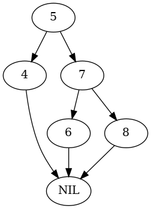
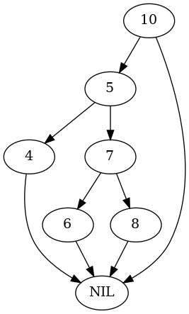
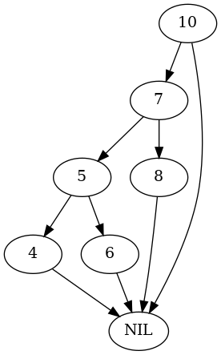
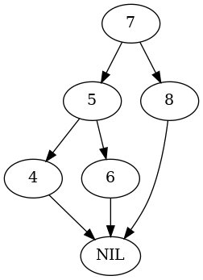

Red-Black Trees: Rotation
Table of Contents
This is a post on rotating nodes in a tree. It is a continuation of this post.
What are Rotations?
In the context of a Red-Black Tree, a Rotation involves swapping the position of two nodes (a parent and one of its children) while maintaining the Binary Search Tree Properties. There are two kinds of rotation:
- Right Rotation: The left child is moved into the position of its parent and the former parent becomes the new parent's right child.
- Left Rotation: The right child is moved into the position of its parent and the former parent becomes the new parent's left child.
Left Rotate
CLRS gives the Left Rotate function so we'll start with that.
Pseudocode
\begin{algorithm}
\caption{LeftRotate}
\begin{algorithmic}
\INPUT The Tree and the parent Node to rotate
\PROCEDURE{LeftRotate}{\textit{T}, \textit{x}}
\STATE \textit{y} $\gets$ \textit{x}.right
\STATE \textit{x}.right $\gets$ \textit{y}.left
\IF {\textit{y}.left $\neq$ \textit{T}.\textsc{NIL}}
\STATE \textit{y}.left.parent $\gets$ \textit{x}
\ENDIF
\STATE \textit{y}.parent $\gets$ \textit{x}.parent
\IF {\textit{x}.parent = \textit{T}.\textsc{NIL}}
\STATE \textit{T}.root $\gets$ \textit{y}
\ELIF {\textit{x} = \textit{x}.parent.left}
\STATE \textit{x}.parent.left $\gets$ \textit{y}
\ELSE
\STATE \textit{x}.parent.right $\gets$ \textit{y}
\ENDIF
\STATE \textit{y}.left $\gets$ \textit{x}
\STATE \textit{x}.parent $\gets$ \textit{y}
\ENDPROCEDURE
\end{algorithmic}
\end{algorithm}
Some Code
# pypi
from expects import be, equal, expect
import networkx
# this project
from bowling.data_structures.red_black_tree import tree
from bowling.data_structures.red_black_tree.arborist import Arborist, Rotator
SLUG = "red-black-trees-rotation"
OUTPUT = f"files/posts/{SLUG}/"
The Imports
# pypi
from attrs import define
# this project
from bowling.data_structures.red_black_tree import tree as rb_tree
The Rotator
@define
class Rotator:
"""A rotator of nodes and their children
Args:
tree: the tree that the parent belongs to
"""
tree: rb_tree.RedBlackTree
The Left-Rotate
This is more-or-less a straight implementation of the Left-Rotate algorithm given above. The main difference is that our Node object automatically sets the parent for a child when the child is set on the node so you won't see the parent
def left(self, node: rb_tree.Node) -> None:
"""Rotates the node with its right child
Args:
node: the parent node to rotate
"""
new_parent = node.right
node.right= new_parent.left
new_parent.parent = node.parent
if node.is_root:
self.tree.root = new_parent
new_parent.left = node
return
Note: Because I defined the Node class so that setting any of the three relation attributes (parent, left, right) updates both sides of the link (e.g. setting left also updates left.parent) we don't need the lines of the algorithm that figure out the other side of a newly established link, so the code is a little shorter than the pseudocode.
Testing It Out
def preorder(node: tree.Node, adjacencies: dict) -> dict:
"""Traverse the nodes and build an adjancency dictionary
"""
if node is not None:
left = node.left.key if node.left else None
right = node.right.key if node.right else None
if any((left, right)):
if left and right:
adjacencies[node.key] = (left, right)
elif left and not right:
adjacencies[node.key] = (left, )
else:
adjacencies[node.key] = (right,)
preorder(node.left, adjacencies)
preorder(node.right, adjacencies)
return
def build_tree(root_parent: tree.Node) -> tuple:
"""Build the test-tree
Args:
- root_parent: The parent of the root-node
Returns:
Tree, Nodes dict
"""
nodes = dict()
nodes[5] = tree.Node(5, parent=root_parent)
root = nodes[5] if root_parent is tree.NIL else root_parent
test_tree = tree.RedBlackTree(root=root)
nodes[4] = tree.Node(4)
nodes[7] = tree.Node(7)
nodes[6] = tree.Node(6)
nodes[8] = tree.Node(8)
nodes[5].left = nodes[4]
nodes[5].right = nodes[7]
nodes[5].right.left = nodes[6]
nodes[5].right.right = nodes[8]
return test_tree, nodes
-
Nil Parent
Our first case will be when the node to swap with its child is root.
def test_nodes(arborist: Arborist, nodes: list) -> dict: root_parent = nodes[5].parent arborist.rotate.left(nodes[5]) if root_parent is tree.NIL: expect(test_tree.root).to(be(nodes[7])) else: expect(test_tree.root).to(be(root_parent)) expect(nodes[7].parent).to(be(root_parent)) expect(nodes[7].left).to(be(nodes[5])) expect(nodes[5].parent).to(be(nodes[7])) expect(nodes[5].right).to(be(nodes[6])) expect(nodes[6].parent).to(be(nodes[5])) expect(nodes[5].left).to(be(nodes[4])) expect(nodes[4].parent).to(be(nodes[5])) expect(nodes[7].right).to(be(nodes[8])) expect(nodes[8].parent).to(be(nodes[7])) return nodes
test_tree, nodes = build_tree(tree.NIL) def plot_graph(root, name): adjacencies = {} preorder(root, adjacencies) graph = networkx.DiGraph(adjacencies) pygraph = networkx.nx_pydot.to_pydot(graph) pygraph.write_png(OUTPUT + f"{name}.png") return plot_graph(test_tree.root, "root_left_rotate")

arborist = Arborist(test_tree) nodes = test_nodes(arborist, nodes)
plot_graph(test_tree.root, "root-left-rotated")
-
Left Child
This is the case where the parent node being demoted is the left-child of its parent.
parent = tree.Node(10) test_tree, nodes = build_tree(parent) plot_graph(test_tree.root, "root_left_left_rotate")

parent.left = nodes[5] nodes = test_nodes(Arborist(test_tree), nodes) expect(parent.left).to(be(nodes[7])) plot_graph(test_tree.root, "root_left_left_rotated")

-
Right Child
This is the case where the parent node being demoted is the right-child of its parent.
parent = tree.Node(2) parent.right = nodes[5] test_tree, nodes = build_tree(parent) plot_graph(test_tree.root, "root_parent_right_rotate")
nodes = test_nodes(Arborist(test_tree), nodes) expect(parent.right).to(be(nodes[7])) plot_graph(test_tree.root, "root_parent_right_rotated")
Right Rotate
This will be the Right-Rotate version. Since we saw with the Left Rotate that the Node definition reduces some of the code needed for the rotation I'll leave those lines out of this version
Pseudocode
\begin{algorithm}
\caption{RightRotate}
\begin{algorithmic}
\INPUT The Tree and the parent Node to rotate
\PROCEDURE{RightRotate}{\textit{T}, \textit{x}}
\STATE \textit{y} $\gets$ \textit{x}.left
\STATE \textit{x}.left $\gets$ \textit{y}.right
\STATE \textit{y}.parent $\gets$ \textit{x}.parent
\IF {\textit{x}.parent = \textit{T}.\textsc{NIL}}
\STATE \textit{T}.root $\gets$ \textit{y}
\ENDIF
\STATE \textit{y}.right $\gets$ \textit{x}
\ENDPROCEDURE
\end{algorithmic}
\end{algorithm}
This makes it a little clearer, I think. What the algorithm is doing is pretty simple. If x is the parent node to rotate with its right child:
- Move
x's left grandchild up to bex's left-child. - Set the parent of the prior
x.leftto bex's parent. - If
xwas root, makeyroot. - Make
xthe right child of its prior left-child.
Some Code
The Right-Rotate
This is more-or-less a straight implementation of the Right-Rotate algorithm given above.
def right(self, node: rb_tree.Node) -> None:
"""Rotates the node with its left child
Args:
node: the parent node to rotate
"""
previous_child = node.left
node.left = previous_child.right
previous_child.parent = node.parent
if node.is_root:
self.tree.root = previous_child
previous_child.right = node
return
Testing It Out
def build_right_rotate_tree(root_parent: tree.Node) -> tuple:
"""Build the test-tree
Args:
- root_parent: The parent of the root-node
Returns:
Tree, Nodes dict
"""
nodes = dict()
nodes[7] = tree.Node(7, parent=root_parent)
root = nodes[7] if root_parent is tree.NIL else root_parent
test_tree = tree.RedBlackTree(root=root)
nodes[4] = tree.Node(4)
nodes[5] = tree.Node(5)
nodes[6] = tree.Node(6)
nodes[8] = tree.Node(8)
nodes[7].left = nodes[5]
nodes[7].right = nodes[8]
nodes[7].left.left = nodes[4]
nodes[7].left.right = nodes[6]
return test_tree, nodes
-
Nil Parent
Our first case will be when the node to swap with its child is root.
def test_nodes_right(arborist, nodes) -> dict: root_parent = nodes[7].parent arborist.rotate.right(nodes[7]) # check the new root expect(nodes[5].parent).to(be(root_parent)) expect(nodes[5].left).to(be(nodes[4])) expect(nodes[4].parent).to(be(nodes[5])) expect(nodes[5].right).to(be(nodes[7])) expect(nodes[7].parent).to(be(nodes[5])) expect(nodes[7].left).to(be(nodes[6])) expect(nodes[6].parent).to(be(nodes[7])) expect(nodes[7].right).to(be(nodes[8])) expect(nodes[8].parent).to(be(nodes[7])) return nodes
test_tree, nodes = build_right_rotate_tree(tree.NIL) plot_graph(test_tree.root, "root_right_rotate")

nodes = test_nodes_right(Arborist(test_tree), nodes) expect(test_tree.root).to(be(nodes[5])) plot_graph(test_tree.root, "root_right_rotated")
-
Left Child
This is the case where the parent node being demoted is the left-child of its parent.
parent = tree.Node(10) test_tree, nodes = build_right_rotate_tree(parent) plot_graph(test_tree.root, "root_right_left_rotate")
parent.left = nodes[7] nodes = test_nodes_right(Arborist(test_tree), nodes) expect(parent.left).to(be(nodes[5])) plot_graph(test_tree.root, "root-right-left-rotated")
-
Right Child
This is the case where the parent node being demoted is the right-child of its parent.
parent = tree.Node(2) test_tree, nodes = build_right_rotate_tree(parent) plot_graph(test_tree.root, "root_right_right_rotate")
parent.right = nodes[7] nodes = test_nodes_right(Arborist(test_tree), nodes) expect(parent.right).to(be(nodes[5])) plot_graph(test_tree.root, "root_right_right_rotated")